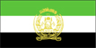

{kind=link}


![[Country map of Afghanistan]](../maps/af-map.jpg)
| Afghanistan |  |
|
| | |
| Introduction |
Background: Afghanistan was invaded and occupied by the Soviet Union in 1979. The USSR was forced to withdraw 10 years later by anti-communist mujahidin forces supplied and trained by the US, Saudi Arabia, Pakistan, and others. Fighting subsequently continued among the various mujahidin factions, but the fundamentalist Islamic Taliban movement has been able to seize most of the country. In addition to the continuing civil strife, the country suffers from enormous poverty, a crumbling infrastructure, and widespread live mines.
| Geography |
Location: Southern Asia, north and west of Pakistan, east of Iran
Geographic coordinates: 33 00 N, 65 00 E
Map references: Asia
Area:
total:
652,000 sq km
land:
652,000 sq km
water:
0 sq km
Area - comparative: slightly smaller than Texas
Land boundaries:
total:
5,529 km
border countries:
China 76 km, Iran 936 km, Pakistan 2,430 km, Tajikistan 1,206 km, Turkmenistan 744 km, Uzbekistan 137 km
Coastline: 0 km (landlocked)
Maritime claims: none (landlocked)
Climate: arid to semiarid; cold winters and hot summers
Terrain: mostly rugged mountains; plains in north and southwest
Elevation extremes:
lowest point:
Amu Darya 258 m
highest point:
Nowshak 7,485 m
Natural resources: natural gas, petroleum, coal, copper, chromite, talc, barites, sulfur, lead, zinc, iron ore, salt, precious and semiprecious stones
Land use:
arable land:
12%
permanent crops:
0%
permanent pastures:
46%
forests and woodland:
3%
other:
39% (1993 est.)
Irrigated land: 30,000 sq km (1993 est.)
Natural hazards: damaging earthquakes occur in Hindu Kush mountains; flooding
Environment - current issues: soil degradation; overgrazing; deforestation (much of the remaining forests are being cut down for fuel and building materials); desertification
Environment - international agreements:
party to:
Desertification, Endangered Species, Environmental Modification, Marine Dumping, Nuclear Test Ban
signed, but not ratified:
Biodiversity, Climate Change, Hazardous Wastes, Law of the Sea, Marine Life Conservation
Geography - note: landlocked
| People |
Population: 25,838,797 (July 2000 est.)
Age structure:
0-14 years:
42.37% (male 5,598,403; female 5,371,054)
15-64 years:
54.86% (male 7,362,961; female 6,839,914)
65 years and over:
2.77% (male 378,741; female 337,724) (2000 est.)
Population growth rate:
3.54% (2000 est.)
note:
this rate reflects the continued return of refugees from Iran
Birth rate: 41.82 births/1,000 population (2000 est.)
Death rate: 18.01 deaths/1,000 population (2000 est.)
Net migration rate: 11.54 migrant(s)/1,000 population (2000 est.)
Sex ratio:
at birth:
1.05 male(s)/female
under 15 years:
1.04 male(s)/female
15-64 years:
1.08 male(s)/female
65 years and over:
1.12 male(s)/female
total population:
1.06 male(s)/female (2000 est.)
Infant mortality rate: 149.28 deaths/1,000 live births (2000 est.)
Life expectancy at birth:
total population:
45.88 years
male:
46.62 years
female:
45.1 years (2000 est.)
Total fertility rate: 5.87 children born/woman (2000 est.)
Nationality:
noun:
Afghan(s)
adjective:
Afghan
Ethnic groups: Pashtun 38%, Tajik 25%, Uzbek 6%, Hazara 19%, minor ethnic groups (Aimaks, Turkmen, Baloch, and others)
Religions: Sunni Muslim 84%, Shi'a Muslim 15%, other 1%
Languages: Pashtu 35%, Afghan Persian (Dari) 50%, Turkic languages (primarily Uzbek and Turkmen) 11%, 30 minor languages (primarily Balochi and Pashai) 4%, much bilingualism
Literacy:
definition:
age 15 and over can read and write
total population:
31.5%
male:
47.2%
female:
15% (1999 est.)
| Government |
Country name:
conventional long form:
Islamic State of Afghanistan; note - the self-proclaimed Taliban government refers to the country as Islamic Emirate of Afghanistan
conventional short form:
Afghanistan
local long form:
Dowlat-e Eslami-ye Afghanestan
local short form:
Afghanestan
former:
Republic of Afghanistan
Data code: AF
Government type: no functioning central government, administered by factions
Capital: Kabul
Administrative divisions:
30 provinces (velayat, singular - velayat); Badakhshan, Badghis, Baghlan, Balkh, Bamian, Farah, Faryab, Ghazni, Ghowr, Helmand, Herat, Jowzjan, Kabol, Kandahar, Kapisa, Konar, Kondoz, Laghman, Lowgar, Nangarhar, Nimruz, Oruzgan, Paktia, Paktika, Parvan, Samangan, Sar-e Pol, Takhar, Vardak, Zabol
note:
there may be two new provinces of Nurestan (Nuristan) and Khowst
Independence: 19 August 1919 (from UK control over Afghan foreign affairs)
National holiday: Victory of the Muslim Nation, 28 April; Remembrance Day for Martyrs and Disabled, 4 May; Independence Day, 19 August
Constitution: none
Legal system: a new legal system has not been adopted but all factions tacitly agree they will follow Shari'a (Islamic law)
Suffrage: NA; previously males 15-50 years of age
Executive branch:
on 27 September 1996, the ruling members of the Afghan Government were displaced by members of the Islamic Taliban movement; the Islamic State of Afghanistan has no functioning government at this time, and the country remains divided among fighting factions
note:
the Taliban have declared themselves the legitimate government of Afghanistan; however, the UN still recognizes the government of Burhanuddin RABBANI; the Organization of the Islamic Conference has left the Afghan seat vacant until the question of legitimacy can be resolved through negotiations among the warring factions; the country is essentially divided along ethnic lines; the Taliban controls the capital of Kabul and approximately two-thirds of the country including the predominately ethnic Pashtun areas in southern Afghanistan; opposing factions have their stronghold in the ethnically diverse north
Legislative branch: non-functioning as of June 1993
Judicial branch: non-functioning as of March 1995, although there are local Shari'a (Islamic law) courts throughout the country
Political parties and leaders: Harakat-i-Islami (Islamic Movement) [Mohammed Asif MOHSENI]; Harakat-Inqilab-i-Islami (Islamic Revolutionary Movement) [Mohammad Nabi MOHAMMADI]; Hizbi Islami-Gulbuddin (Islamic Party) [Gulbuddin HIKMATYAR faction]; Hizbi Islami-Khalis (Islamic Party) [Yunis KHALIS faction]; Hizbi Wahdat-Akbari faction (Islamic Unity Party) [Mohammad Akbar AKBARI]; Ittihad-i-Islami Barai Azadi Afghanistan (Islamic Union for the Liberation of Afghanistan) [Abdul Rasul SAYYAF]; Jabha-i-Najat-i-Milli Afghanistan (Afghanistan National Liberation Front) [Sibghatullah MOJADDEDI]; Mahaz-i-Milli-Islami (National Islamic Front) [Sayed Ahamad GAILANI]; Taliban (Religious Students Movement) [Mohammad OMAR]; United Islamic Front for the Salvation of Afghanistan comprised of Jumbesh-i-Melli Islami (National Islamic Movement) [Abdul Rashid DOSTAM]; Jamiat-i-Islami (Islamic Society) [Burhanuddin RABBANI and Ahmad Shah MASOOD]; and Hizbi Wahdat-Khalili faction (Islamic Unity Party) [Abdul Karim KHALILI]
Political pressure groups and leaders: Afghan refugees in Pakistan, Australia, US, and elsewhere have organized politically; Mellat (Social Democratic Party) [leader NA]; Peshawar, Pakistan-based groups such as the Coordination Council for National Unity and Understanding in Afghanistan or CUNUA [Ishaq GAILANI]; tribal elders represent traditional Pashtun leadership; Writers Union of Free Afghanistan or WUFA [A. Rasul AMIN]
International organization participation: AsDB, CP, ECO, ESCAP, FAO, G-77, IAEA, IBRD, ICAO, ICRM, IDA, IDB, IFAD, IFC, IFRCS, ILO, IMF, Intelsat, IOC, IOM (observer), ITU, NAM, OIC, OPCW, UN, UNCTAD, UNESCO, UNIDO, UPU, WFTU, WHO, WMO, WToO
Diplomatic representation in the US:
note:
embassy operations suspended 21 August 1997
chief of mission:
Ambassador (vacant)
chancery:
2341 Wyoming Avenue NW, Washington, DC 20008
telephone:
[1] (202) 234-3770
FAX:
[1] (202) 328-3516
consulate(s) general:
New York
Diplomatic representation from the US: the US embassy in Kabul has been closed since January 1989 due to security concerns
Flag description:
three equal horizontal bands of green (top), white, and black with a gold emblem centered on the three bands; the emblem features a temple-like structure with Islamic inscriptions above and below, encircled by a wreath on the left and right and by a bolder Islamic inscription above, all of which are encircled by two crossed scimitars
note:
the Taliban uses a plain white flag
| Economy |
Economy - overview: Afghanistan is an extremely poor, landlocked country, highly dependent on farming and livestock raising (sheep and goats). Economic considerations have played second fiddle to political and military upheavals during two decades of war, including the nearly 10-year Soviet military occupation (which ended 15 February 1989). During that conflict one-third of the population fled the country, with Pakistan and Iran sheltering a combined peak of more than 6 million refugees. In early 1999, 1.2 million Afghan refugees remained in Pakistan and about 1.4 million in Iran. Gross domestic product has fallen substantially over the past 20 years because of the loss of labor and capital and the disruption of trade and transport. The majority of the population continues to suffer from insufficient food, clothing, housing, and medical care. Inflation remains a serious problem throughout the country. International aid can deal with only a fraction of the humanitarian problem, let alone promote economic development. The economic situation did not improve in 1998-99, as internal civil strife continued, hampering both domestic economic policies and international aid efforts. Numerical data are likely to be either unavailable or unreliable. Afghanistan was by far the largest producer of opium poppies in 1999, and narcotics trafficking is a major source of revenue.
GDP: purchasing power parity - $21 billion (1999 est.)
GDP - real growth rate: NA%
GDP - per capita: purchasing power parity - $800 (1999 est.)
GDP - composition by sector:
agriculture:
53%
industry:
28.5%
services:
18.5% (1990)
Population below poverty line: NA%
Household income or consumption by percentage share:
lowest 10%:
NA%
highest 10%:
NA%
Inflation rate (consumer prices): NA%
Labor force: 8 million (1997 est.)
Labor force - by occupation: agriculture 68%, industry 16%, services 16% (1980 est.)
Unemployment rate: 8% (1995 est.)
Budget:
revenues:
$NA
expenditures:
$NA, including capital expenditures of $NA
Industries: small-scale production of textiles, soap, furniture, shoes, fertilizer, and cement; handwoven carpets; natural gas, oil, coal, copper
Electricity - production: 430 million kWh (1998)
Electricity - production by source:
fossil fuel:
41.86%
hydro:
58.14%
nuclear:
0%
other:
0% (1998)
Electricity - consumption: 510 million kWh (1998)
Electricity - exports: 0 kWh (1998)
Electricity - imports: 110 million kWh (1998)
Agriculture - products: opium poppies, wheat, fruits, nuts, karakul pelts; wool, mutton
Exports: $80 million (does not include opium) (1996 est.)
Exports - commodities: opium, fruits and nuts, handwoven carpets, wool, cotton, hides and pelts, precious and semi-precious gems
Exports - partners: FSU, Pakistan, Iran, Germany, India, UK, Belgium, Luxembourg, Czech Republic
Imports: $150 million (1996 est.)
Imports - commodities: capital goods, food and petroleum products; most consumer goods
Imports - partners: FSU, Pakistan, Iran, Japan, Singapore, India, South Korea, Germany
Debt - external: $5.5 billion (1996 est.)
Economic aid - recipient: US provided about $70 million in humanitarian assistance in 1997; US continues to contribute to multilateral assistance through the UN programs of food aid, immunization, land mine removal, and a wide range of aid to refugees and displaced persons
Currency: 1 afghani (AF) = 100 puls
Exchange rates: afghanis (Af) per US$1 - 4,700 (January 2000), 4,750 (February 1999), 17,000 (December 1996), 7,000 (January 1995), 1,900 (January 1994), 1,019 (March 1993), 850 (1991); note - these rates reflect the free market exchange rates rather than the official exchange rate, which was fixed at 50.600 afghanis to the dollar until 1996, when it rose to 2,262.65 per dollar, and finally became fixed again at 3,000.00 per dollar in April 1996
Fiscal year: 21 March - 20 March
| Communications |
Telephones - main lines in use: 31,200 (1983); note - there were 21,000 main lines in use in Kabul in 1998
Telephones - mobile cellular: NA
Telephone system:
domestic:
very limited telephone and telegraph service; in 1997, telecommunications links were established between Mazar-e Sharif, Herat, Kandahar, Jalalabad, and Kabul through satellite and microwave systems
international:
satellite earth stations - 1 Intelsat (Indian Ocean) linked only to Iran and 1 Intersputnik (Atlantic Ocean region); commercial satellite telephone center in Ghazni
Radio broadcast stations: AM 7 (6 are inactive; the active station is in Kabul), FM 1, shortwave 1 (broadcasts in Pushtu, Dari, Urdu, and English) (1999)
Radios: 167,000 (1999)
Television broadcast stations: at least 10 (one government run central television station in Kabul and regional stations in nine of the 30 provinces; the regional stations operate on a reduced schedule; also, in 1997, there was a station in Mazar-e Sharif reaching four northern Afghanistan provinces) (1998)
Televisions: 100,000 (1999)
Internet Service Providers (ISPs): NA
| Transportation |
Railways:
total:
24.6 km
broad gauge:
9.6 km 1.524-m gauge from Gushgy (Turkmenistan) to Towraghondi; 15 km 1.524-m gauge from Termiz (Uzbekistan) to Kheyrabad transshipment point on south bank of Amu Darya
Highways:
total:
21,000 km
paved:
2,793 km
unpaved:
18,207 km (1998 est.)
Waterways: 1,200 km; chiefly Amu Darya, which handles vessels up to about 500 DWT
Pipelines: petroleum products - Uzbekistan to Bagram and Turkmenistan to Shindand; natural gas 180 km
Ports and harbors: Kheyrabad, Shir Khan
Airports: 46 (1999 est.)
Airports - with paved runways:
total:
14
over 3,047 m:
3
2,438 to 3,047 m:
4
1,524 to 2,437 m:
4
914 to 1,523 m:
1
under 914 m:
2 (1999 est.)
Airports - with unpaved runways:
total:
32
2,438 to 3,047 m:
5
1,524 to 2,437 m:
13
914 to 1,523 m:
3
under 914 m:
11 (1999 est.)
Heliports: 3 (1999 est.)
| Military |
Military branches: NA; note - the military does not exist on a national basis; some elements of the former Army, Air and Air Defense Forces, National Guard, Border Guard Forces, National Police Force (Sarandoi), and tribal militias still exist but are factionalized among the various groups
Military manpower - military age: 22 years of age
Military manpower - availability:
males age 15-49:
6,401,980 (2000 est.)
Military manpower - fit for military service:
males age 15-49:
3,432,236 (2000 est.)
Military manpower - reaching military age annually:
males:
244,958 (2000 est.)
Military expenditures - dollar figure: $NA
Military expenditures - percent of GDP: NA%
| Transnational Issues |
Disputes - international: support to Islamic militants worldwide by some factions; question over which group should hold Afghanistan's seat at the UN
Illicit drugs: world's largest illicit opium producer, surpassing Burma (potential production in 1999 - 1,670 metric tons; cultivation in 1999 - 51,500 hectares, a 23% increase over 1998); a major source of hashish; increasing number of heroin-processing laboratories being set up in the country; major political factions in the country profit from drug trade